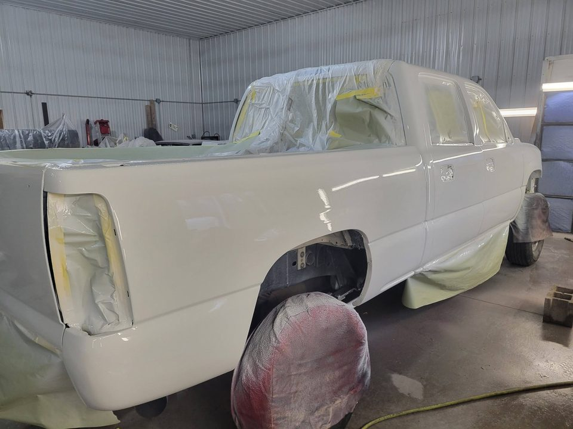
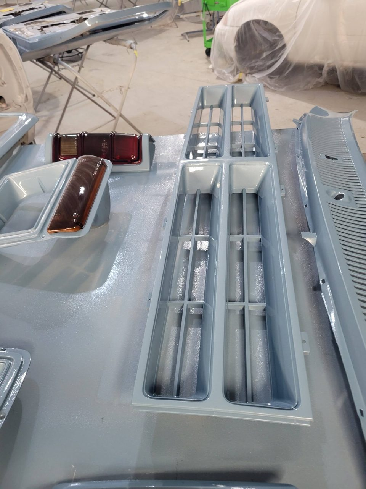
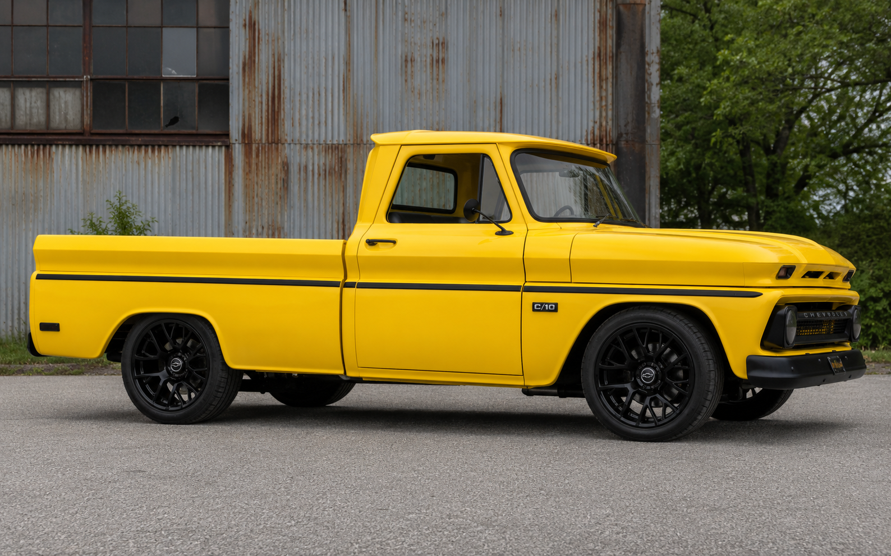
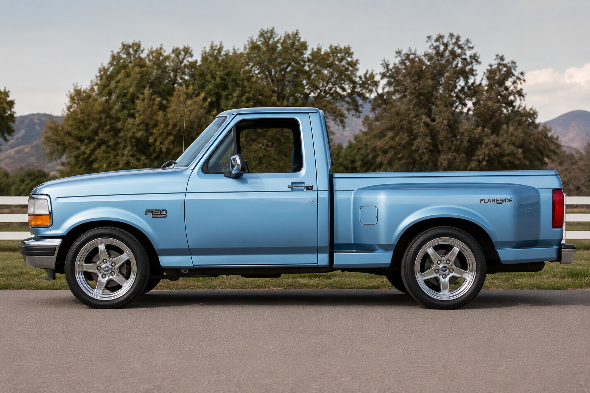

Since 1993
Three Decades of Craftsmanship
From a Traverse City body shop to Northern Michigan's largest detailing & auto body operation — built one straight panel, one flawless finish, one happy customer at a time.
Our Story
Built in Traverse City
Appearance Unlimited was founded in 1993 with a simple idea: do the work right, treat people straight, and the rest takes care of itself.
Three decades later, that idea has grown into Northern Michigan's largest detailing and auto body operation. Locals bring us their daily drivers after a deer strike or a rough winter; collectors bring us the classics they've waited a lifetime to restore. We're proud that it's the same crew doing both.
That's not an accident — it's the point. The same hands that fix daily drivers restore the classics. The discipline of insurance-grade collision work keeps our restorations honest, and the obsessive standards of show-car restoration raise the bar on every fender bender that rolls through the door.
What We Stand On
Quality. Integrity. Craftsmanship.
Quality
Nothing leaves this shop until it meets our standard — and our standard is set by the show field, not the minimum. Straight panels, invisible blends, finishes that hold up to Michigan seasons. If it's not right, it's not done.
Integrity
Written estimates, honest timelines, and billing you can actually read. We tell you what your vehicle needs — and just as importantly, what it doesn't. Thirty years in the same town doesn't happen any other way.
Craftsmanship
Metal work, bodywork, paint, and detail are trades, and we treat them that way. Skills passed down and sharpened over three decades, applied with the patience real work demands. Machines don't restore cars — craftsmen do.
Facility & Team
Where the Work Happens
Founded by Michael Autry, Appearance Unlimited runs on a crew of body techs, painters, and detailers who genuinely love cars — many of whom have their own project vehicles at home. The facility on Holiday Hills Drive is set up to take a vehicle from bare metal to best-in-show without it ever leaving our care.




Northern Michigan Roots
Part of the Community
We live here, drive these roads, and salt-proof our own trucks every winter. Come summer, you'll find our customers' cars — and our crew — out enjoying car-show season across Northern Michigan. The best part of this job is seeing a car we finished roll into a show field with a proud owner behind the wheel.


Yes, we love trucks. Bring us your square-body.